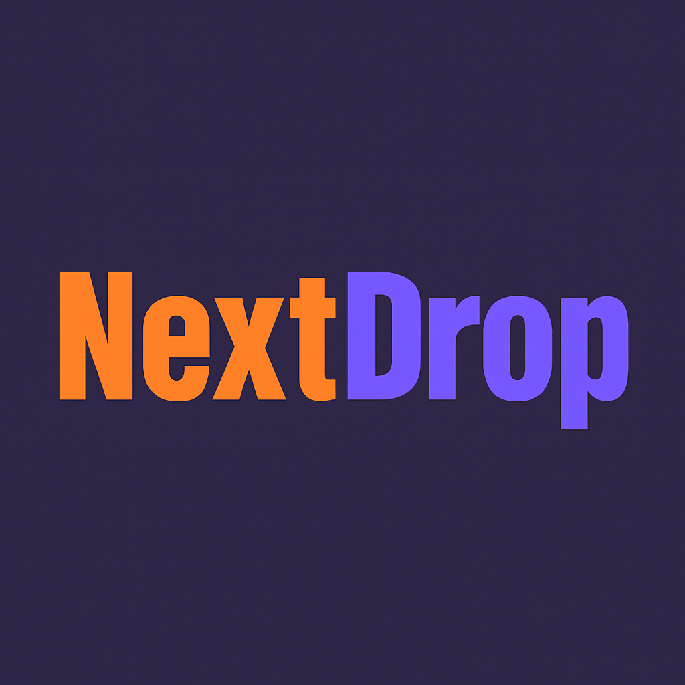
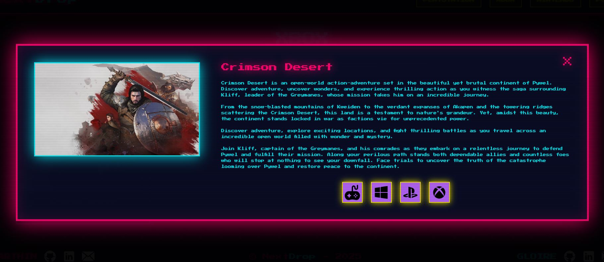

🎯 Contexte du projet
NextDrop est une plateforme web rétro-futuriste dédiée aux prochaines sorties de jeux vidéo, développée en HTML, CSS et JavaScript. Inspiré d'un univers néon cyberpunk, le projet combine une interface fluide, des animations rétro et une expérience utilisateur immersive. Les données sont récupérées dynamiquement via une API externe, permettant d'afficher les nouveaux jeux à venir sur PlayStation, Xbox, Nintendo et PC. Ce projet est né d'une passion pour le design futuriste, la culture gaming et l'envie de créer un outil simple mais visuellement marquant.
🎓 Objectifs pédagogiques
- Fetch API : Consommer une API externe pour récupérer les données de jeux en temps réel
- JavaScript asynchrone : Maîtriser async/await et la gestion des promesses
- Manipulation du DOM : Générer dynamiquement les fiches de jeux depuis les données API
- Design rétro-futuriste : Créer une esthétique néon cyberpunk cohérente avec CSS
- Filtrage multi-plateformes : Trier les jeux par plateforme (PS, Xbox, Nintendo, PC)
- Responsive design : Adapter l'interface à tous les formats d'écran
✨ Fonctionnalités principales
1. Récupération des données via API
Les données des prochaines sorties de jeux sont récupérées dynamiquement depuis une API externe à l'aide de fetch et async/await. Chaque fiche de jeu (titre, plateforme, date de sortie, image) est générée automatiquement dans le DOM à partir de la réponse JSON de l'API.
2. Filtrage par plateforme
Les joueurs peuvent filtrer les prochaines sorties par plateforme : PlayStation, Xbox, Nintendo et PC. Le filtrage s'effectue côté client en JavaScript, sans rechargement de page, pour une navigation fluide.
3. Interface rétro-futuriste néon
L'ensemble de l'interface est conçu dans un univers cyberpunk : effets de lueur néon, animations rétro, typographies stylisées et palette de couleurs sombre et contrastée pour une immersion totale dans l'univers gaming.
4. Fiches de jeux dynamiques
Chaque jeu est présenté sous forme de carte avec son image, son titre, sa plateforme et sa date de sortie. Les cartes sont générées entièrement en JavaScript depuis les données retournées par l'API.
5. Responsive et accessible
La plateforme s'adapte à tous les formats d'écran (mobile, tablette, desktop) grâce à un design responsive soigné. Une attention particulière a été portée à la lisibilité et à la navigation sur tous les supports.
📸 Captures d'écran

Page d'accueil

Description de jeu

Appel API en JavaScript
🗄️ Architecture de l'application
Structure du projet :
- index.html : Page principale listant les prochaines sorties
- api.js : Module de récupération et traitement des données API
- filter.js : Logique de filtrage par plateforme côté client
- style.css : Thème rétro-futuriste, effets néon et responsive design
🛠️ Stack technique

HTML5
Structure sémantique de la plateforme et injection dynamique des fiches de jeux

CSS3
Esthétique cyberpunk, effets néon, animations rétro et responsive design

JavaScript
Appels API asynchrones (fetch/async/await), manipulation du DOM et filtrage dynamique
🚀 Défis relevés
- Consommation d'une API externe et gestion des erreurs de chargement
- Génération dynamique des fiches de jeux depuis une réponse JSON
- Implémentation d'un filtrage multi-plateformes fluide côté client
- Création d'une esthétique néon cyberpunk cohérente et immersive
- Collaboration en binôme avec répartition des tâches (design & JavaScript)
- Adaptation responsive de l'interface sur tous les formats d'écran